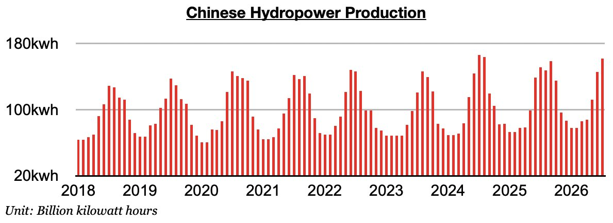
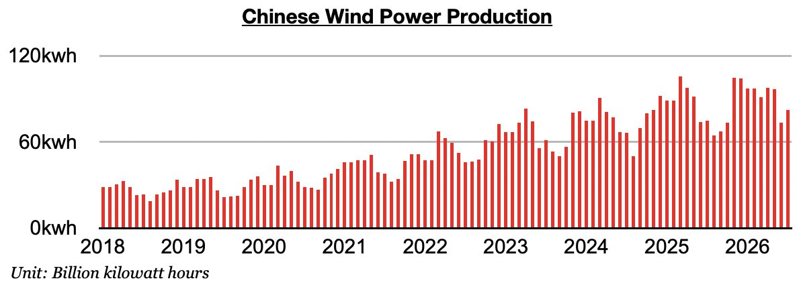
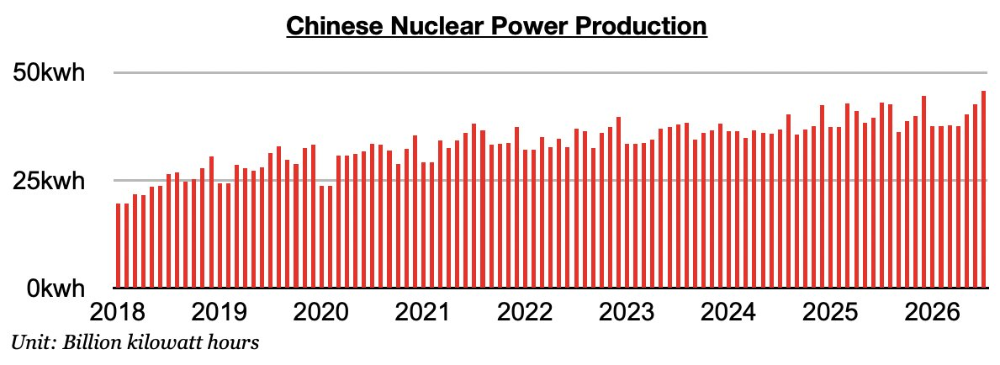
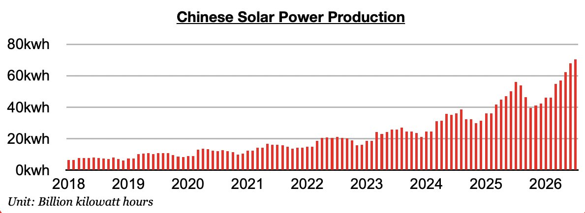

As we discussed in Commodore Research's most recent Weekly China Report, Chinese electricity production set a record last month. Electricity production totaled a record 943.9 billion kilowatt hours, which is up year-on-year by 2%. Of note, though, is that thermal coal-derived electricity generation contracted year-on-year by 3%. Fortunately for the dry bulk market, domestic coal production contracted year-on-year by 10%. Significant is that China's hydropower production has continued to maintain solid year-on-year growth, and nuclear and solar power production have each set new records.
Hydropower production totaled 161.7 billion kilowatt hours. This is up month-on-month by 15.9 billion kilowatt hours (11%) and up year-on-year by 10.3 billion kilowatt hours (7%). Hydropower output has now increased year-on-year for eleven straight months.

Wind power output totaled 82 billion kilowatt hours. This is up month-on- month by 8.7 billion kilowatt hours (12%) and up year-on-year by 7.6 billion kilowatt hours (10%).

Nuclear power production totaled a record 45.8 billion kilowatt hours. This is up month-on-month by 3.1 billion kilowatt hours (7%) and up year-on-year by 2.8 billion kilowatt hours (7%).

Solar power production totaled a record 70.3 billion kilowatt hours. This is up month-on-month by 2.4 billion kilowatt hours (4%) and up year-on-year by 14.4 billion kilowatt hours (26%). Solar power production records have now been set in four straight months.
